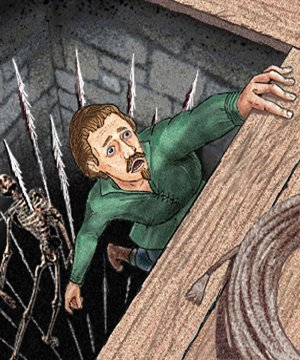
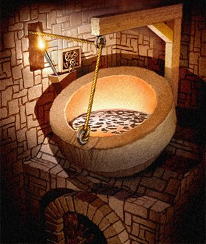

TROVARE LE TRAPPOLE - FIND TRAPS
DURATA DELLA PROVA
Ogni prova di questa abilità richiede 1d10 round per ogni settore o singolo oggetto.
STRUMENTAZIONE RICHIESTA
Sebbene non siano necessariamente richiesti attrezzi da scasso, provare a cercare e rimuovere trappole senza questi attrezzi da al ladro una penalità di -10% al tentativo.
REGOLAMENTO PER TROVARE TRAPPOLE
Attraverso l'uso di questa abilità il ladro è in grado di notare la presenza di una trappola della cui esistenza non aveva alcuna consapevolezza e di capirne, in generale, il funzionamento ma non la sua reale natura. Un ladro può cercare trappole in un settore di pavimento, parete o soffitto di 9 metri quadrati o su un singolo oggetto (si considera l'oggetto nella singolarità) impiegando 1d10 rounds. Al termine di questo periodo il ladro effettua una prova nella sua abilità se la prova ha successo il ladro avrà trovato la trappola altrimenti non sarà stato in grado di trovarla e potrà ripetere il tentativo solo dopo aver superato un livello di esperienza o dopo aver acquisito piena consapevolezza della sua presenza.
Se il ladro ha piena consapevolezza della presenza di una trappola, perché è stato avvisato dettagliatamente della sua posizione o perché l'ha vista precedentemente scattare ottiene un bonus del +25% alla prova per trovarla e per capirne il funzionamento. Se la prova ha successo il ladro avrà trovato la trappola altrimenti non sarà stato in grado di trovarla e potrà ripetere il tentativo solo dopo aver superato un nuovo livello di esperienza.
Si noti che il ladro può anche riuscire a scoprire una trappola magica, ossia una trappola che impieghi per funzionare in tutto od in parte la magia (non può scoprire in alcun caso, però, la presenza di semplici incantesimi protettivi su un'area od un oggetto). Le possibilità di utilizzare la magia nella produzione di una trappola sono le più disparate si pensi ad. esempio ad una bacchetta magica che lancia una magia su chi tocca una maniglia oppure ad una normale trappola resa invisibile dalla magia. La possibilità del ladro di scoprire trappole magiche è ridotta del 50% rispetto al suo punteggio normale.
Quando il ladro cerca una trappola utilizza ogni forma di precauzione per tale motivo non è possibile che lo stesso faccia scattare la trappola con un semplice fallimento della prova in questa abilità, se però il ladro effettua un fallimento critico (tiro naturale da 96 a 100) avrà erroneamente fatto scattare la trappola su se stesso e ne subirà tutte le eventuali conseguenze. Se, invece, il ladro effettua un successo critico (tiro naturale da 01 a 05) non solo avrà scoperto la trappola ma otterrà un bonus di +20% all'eventuale successivo tentativo di remove traps.
RIMUOVERE TRAPPOLE - REMOVE TRAPS
DURATA DELLA PROVA
Ogni prova di questa abilità richiede 1d10 round per ogni trappola scoperta.
STRUMENTAZIONE RICHIESTA
Sono richiesti gli attrezzi da scasso come strumento indispensabile per disabilitare una trappola.
REGOLAMENTO PER DISABILITARE LE TRAPPOLE
Attraverso l'uso di questa abilità il ladro è in grado di bloccare il funzionamento di una qualsiasi trappola che sia riuscito precedentemente a scoprire con una prova della medesima abilità avvenuta con successo. Se la prova ha successo il ladro avrà disabilitato la trappola che non potrà più scattare, altrimenti non sarà stato in grado di bloccarla e la trappola scatterà regolarmente se attivata. Inoltre, se la prova ha successo il ladro potrà in futuro avvitare e disattivare la trappola a piacimento impiegando ogni volta i round richiesti per effettuare la prova. Se, invece, non è riuscita il ladro saprà di non essere in grado di disattivarla e potrà riprovarci solo dopo aver raggiunto un nuovo livello di esperienza. Si noti che per le trappole magiche occorre considerare il tipo di influenza che la magia effettua sulla trappola per determinare se, di volta in volta, sia possibile disabilitarla ed eventualmente rimuoverla.
In ogni caso, provare a disabilitare una trappola è un'azione rischiosa, se durante il tentativo di rimozione il ladro effettua un fallimento critico (tiro naturale da 96 a 100) avrà erroneamente fatto scattare la trappola su se stesso e ne subirà tutte le eventuali conseguenze.
Qualora la trappola, per sua natura, sia trasportabile e rimovibile, il ladro potrebbe anche riuscire a rimuoverla completamente. Ciò potrà avvenire se il tiro per disabilitarla (non occorre effettuare un secondo tiro) è stato così buono da permettere al ladro di riuscirci anche avendo la metà delle possibilità di riuscita. Una volta rimossa una trappola il ladro potrà riposizionarla nello stesso luogo in cui si trovava od in un luogo compatibile con questo (o reso compatibile con una eventuale trasformazione dello stesso) superando un prova in questa abilità. Se la prova fallisce non sarà in grado di riposizionarla e dovrà attendere un nuovo livello di esperienza per riprovarci, se durante il tentativo di posizionamento il ladro effettua un fallimento critico (tiro naturale da 96 a 100) la trappola si sarà anche definitivamente rovinata.
Esempio dell'applicazione delle regole precedenti: Lotramir, ladro di 6° livello con 50% in Find/Remove Traps, si reca in un dungeon, camminando scorge nel pavimento davanti a se una chiazza di sangue secco. Insospettito decide di cercare una trappola sul pavimento antistante (3m. * 3m.) non avendo piena consapevolezza della sua presenza. Tira 1d10 ed effettua un 6, dopo 6 rounds in cui studia a fondo il settore interessato tira la prova sull'abilità ed effettua 18%. Si rende, quindi, conto della presenza di una trappola sul pavimento, si tratta di un tagliola mimetizzata. Decide allora di provare a disabilitarla. Tira quindi 1d10 ed effettua 4. Dopo 4 rounds in cui armeggia vicino la tagliola tira sull'abilità nuovamente ed effettua un 48% sarà quindi riuscito a bloccare il meccanismo ma non a rimuovere la tagliola (occorreva il 25%).